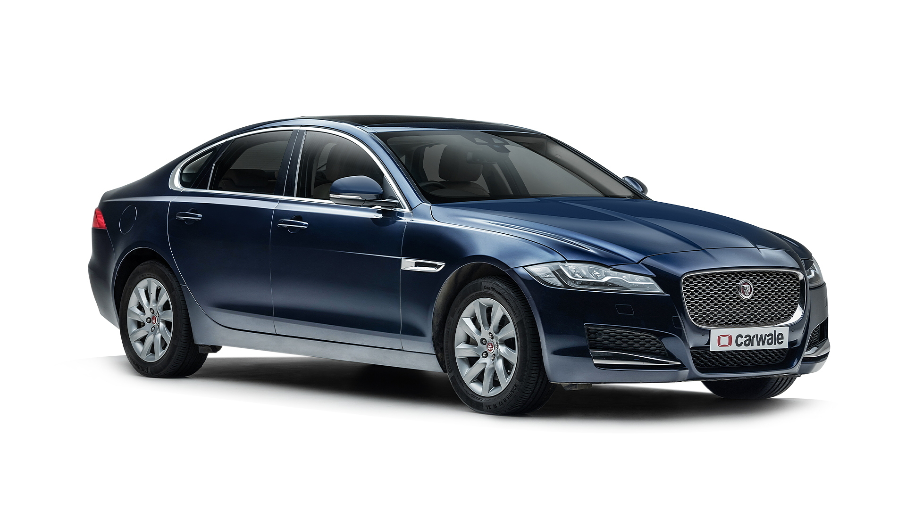

2. jaguar
Jaguar cars India offers 4 new models in India with price starting at Rs. 71.60 Lakh and going upto Rs. 1.53 Crore. The popular cars of Jaguar include F-TYPE (Rs. 98.13 Lakh), F-Pace (Rs. 74.88 Lakh) and XF (Rs. 71.60 Lakh) . The cheapest Jaguar car is XF (Rs. 71.60 Lakh) and the most expensive one is F-TYPE (Rs. 1.53 Crore). Jaguar cars in India are expected to launch C X17 (Rs. 70.00 Lakh), C X75 (Rs. 2.50 Crore) and E Pace (Rs. 45.00 Lakh) in the year 2022-2023 . Select a Jaguar car to know the latest offers in your city, prices, variants, specifications, pictures, mileage and reviews. .
Examples of jaguar

3.wagonr
The Maruti Suzuki Wagon R is one of the most acclaimed and popular models from the house of Maruti Suzuki. Prices for this Hatchback start from Rs. 5.47 Lakh to Rs. 7.20 Lakh and buyers can pick from as many as 0 different versions.. The transmission options on the Maruti Suzuki Wagon R include both Manual and Automatic gearbox.